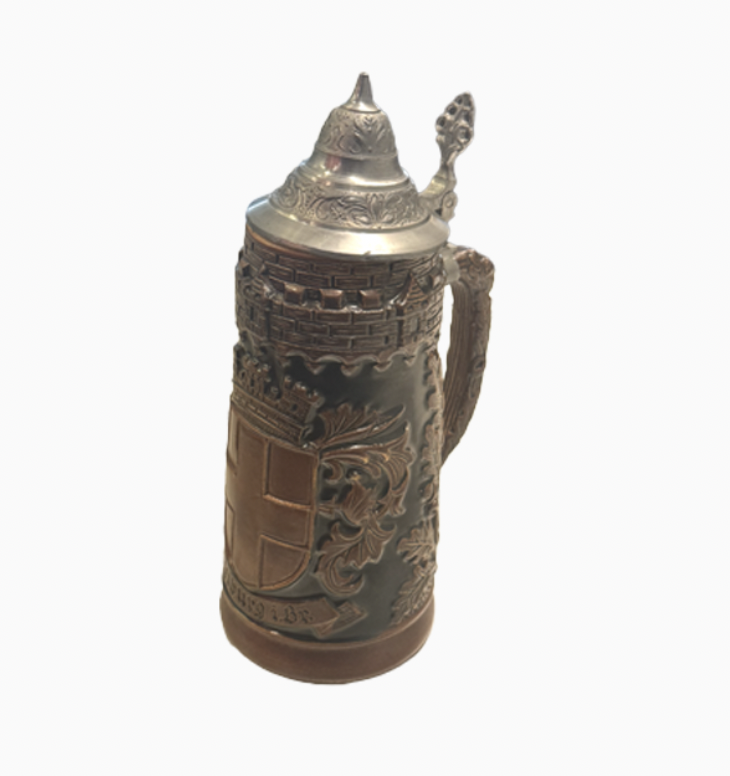

Mug

Freiburg im Breisgau Stein
Size
8*10*3 inches
Timeline
Owned less than a year
Released 1956 - 1990
Description
A stein with a design regarding the town of Freiburg im Breisgau.
Memories
Saw a collection of steins from an uncle of mine, and the artistry of it reminded to me pursue further into the arts. After so, seeing this always make me inspired.
Dreams
I want to keep having enough time to actually use it rather than just carrying it around.
Wonders
I wonder of all the memories that I might be able to acquire as time goes by. Should experience more and spend more time with it.